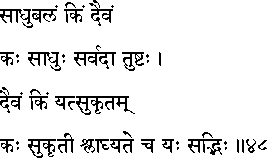
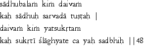

|

|
Verse 48 - Meaning:
Q:What (kim) is the source of strength (balam) for a Saadhu ?
A:God. (daivam)
Q:Who is (kah) a Saadhu?
A:That one who is ever (sarvadaa) satisfied.(tushttah)
Q:What (kim) is one's Fate? (daivam)
(Note: Here, "daivam" is used to connote the controlling force or power in one's life)
A:One's own meritorius actions. (yat-sukrtam)
Q:Who (kah) is to be identified as one with meritorius actions to his credit ? (sukrti)
A:That one who has the approval and admiration (slaaghyate) of virtuous men. (yah-sadbhih)
|